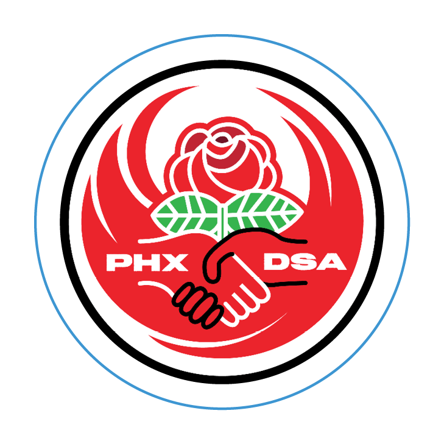
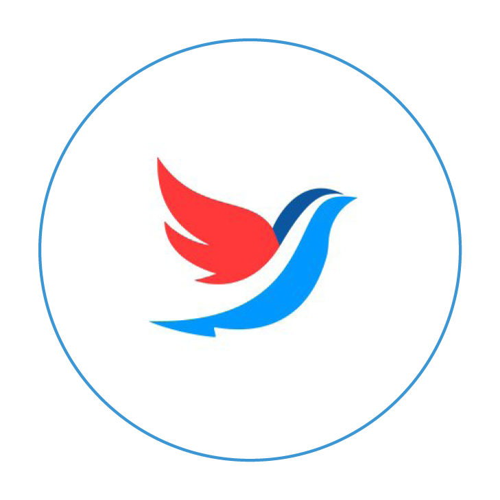

How's He Going to Pay for It?
Who Are We?
Videos
What Can I Do?
Resources & Contact Info
Donate
Bernie wants to...
Make public universities, colleges, and trade schools tuition-free and end government profiteering off student loans by cutting interest rates to give millions relief from inescapable debt.
Reform our criminal justice system by banning for-profit prisons, demilitarizing the police, re-enfranchising those who have paid their debt to society, legalizing marijuana, and putting a stop to the failed War on Drugs.
Establish an immigration policy that is fair and humane, one that stops the criminalization of communities of color, keeps families together, and creates a path to citizenship for undocumented immigrants.
Expand affordable housing by growing the National Affordable Housing Trust Fund, reinvigorating federal housing programs, raising the minimum wage to $15/hr, defending fair housing, promoting home ownership, and giving relief to underwater homeowners.
How does he propose to pay for these policies?
By making the super rich, Wall Street, and large corporations pay their fair share.
Decades of tax cuts for the billionaire class have made it seem impossible to pay for the transformations we need to renew American society. But it doesn’t have to be this way—not if we have the political will to restore progressive taxation.
By making the wealthy pay their fair share, we can guarantee healthcare to every person in the country. We can make college free for all and relieve crippling student debt. We can have clean water and air, better food, and a habitable planet. And we can all enjoy the dignity of working a well-paid, union supported job.
Who are we?
Arizona for Bernie Sanders is a coalition of progressive groups working to elect Bernie Sanders for President of the United States in 2020, and to elect similar progressives at all levels of government.

Videos
Meet Us.
Meet Rebecca Garelli.
Meet Becca S.
Arizona for Bernie Town Hall, 5/28/19
Compilation Video
Senator Juan Mendez
Carlos Garcia, City Council
Rebecca Garelli, Educator, AEU, #RedForEd
State Rep Amish Shah, MD
Tanzil Chowdhury, YDSA ASU

What Can I Do?
Attend a Canvass:
The best thing you can do to help elect Bernie Sanders is to have high-quality, face-to-face conversations with your neighbors in the Valley about Bernie’s transformative political platform, and for that, there’s nothing better than canvassing! Check our Facebook page for information about upcoming canvasses. And if you want to hold your own door-to-door or street canvass, check out the resources below and contact azbernie2020@gmail.com for help setting it up.
Phonebank:
The second best thing you can do is to phonebank. We organize in-person phonebanks, and you can find information about these on our Facebook page. But you can also phonebank from the comfort of your own home. Just email Arizona for Bernie at azbernie2020@gmail.com, and we’ll set you up.
Mass outreach tactics like canvassing and phonebanking are the most important things we can be doing right now. But if you’d like to get plugged in to the work of the Arizona for Bernie coalition in other ways, just let us know, and we can talk it through: azbernie2020@gmail.com.
Join us.
Join the mailing list to stay in the loop.
Resources/Contact
Here are some of the materials that Arizona for Bernie uses. Feel free to print and use yourself. Send us an email at azbernie2020@gmail.com if you have any questions about anything.
How To's
Running an Arizona for Bernie Door-to-Door Canvass
Running an Arizona for Bernie Street Canvass
Arizona for Bernie Phonebanking
Materials